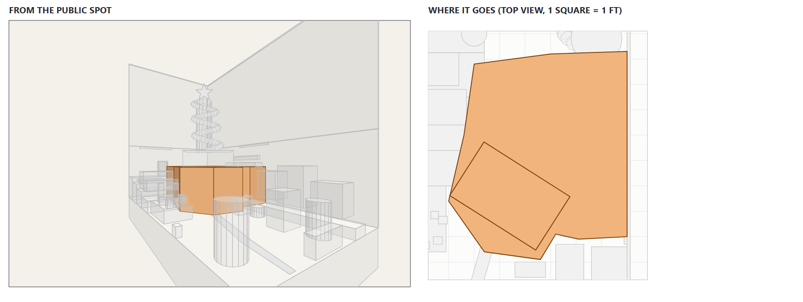

Crib 2026 · That Night in Bethlehem · crew pack
Opens 24 December 2026 · stage 9 ft wide × 16 ft deep · 11 blocks (A, B, C, E to L; there is no D, the rock hill is part of B)

Who builds what, and when
| Block | Name | Build window | Team |
|---|
| A | Stage frame and rake | 20 Nov – 10 Dec | Carpentry crew of 2–3 |
| B | Cave, rock hill and Holy Family | 23 Nov – 14 Dec | Rock and plaster group + figures and painting group |
| C | House with upper room | 30 Nov – 14 Dec | Carpentry + small-figure painters |
| E | Shepherds' field | 26 Nov – 16 Dec | Figures and painting group |
| F | Floating angel unit | 6–22 Dec | Electronics lead + one painter |
| G | Village street | 30 Nov – 19 Dec | Rock and plaster + figures groups |
| H | Lights and control | 23 Nov – 22 Dec | Electronics and show-control group + an electrician for 2 days |
| I | Sky: cloud spiral and star | 30 Nov – 21 Dec | Rigging lead + 2 helpers (ladder or scaffold, two people at all times) |
| J | Backdrop | 20 Nov – 20 Dec | Backdrop and rigging group |
| K | Far village and Magi shelf | 10–19 Dec | One miniature builder |
| L | Foreground and view spot | 19–23 Dec | Easy tasks for helpers |
How to use this pack
- Find your block letter.
- Page 1: what it looks like and a prompt for a picture of the finished block.
- Page 2: the blueprint drawing. Page 3: every numbered part with its exact size and place, and the cut list. Page 4: the steps, in order. Tick "done when" and hand over.
The whole crib: front, side and top, plus the view from the public spot
Feet. Stage 9 ft wide at the front × 16 ft deep. Letters are the block letters.
Check on site first
☐ Deck height (2 ft assumed) and a free 9 × 16 ft☐ Ceiling height (about 15 ft assumed) and ceiling type☐ Altar centred on the front wall; crib at its right end☐ Power point, exit and the deck load rating☐ Work-at-height rules for hanging block I☐ How much 2023 plywood still existsA
Stage frame and rake
5 base, 12 base (the raked deck every other block sits on)
Page 1 of 4 · what it is
How it looks from the public spot, and where it goes

Size and place: Whole stage 9 × 16 ft. Raked from 0 at the front to +3.0 ft at the hill crest; terrace bands +0.8, +1.2, +1.6, +2.0 on the left. Build: 20 Nov – 10 Dec Team: Carpentry crew of 2–3
In short
- Confirm deck height, size and load rating on site; mark the 9 × 16 ft grid.
- Prefab the frame in 4 × 4 ft sections at the workshop; label each section.
- Cut legs to the heights on the plan; screw to the battens at 2 ft centres.
- Cross-brace every leg taller than 1.5 ft, both ways.
- Skin the tops with ply; leave hatches A, B, C loose.
You need
- Pine/casuarina battens 2 × 2 in (~160 ft)
- Plywood 9–12 mm, 8 × 4 ft (5 sheets)
- Screws, nails, brackets, wood glue (lot)
- Black pleated skirting + Velcro (25 ft run × 2 ft)
- Fire-retardant spray (all cloth, thermocol, cotton) (4 L)
Done when
- Frame is level across and rigid: two people can stand on any panel with no flex.
- Service hatches A (control box), B (angel and mister) and C (speaker) open freely and are labelled.
- Skirting on the open front and left edges hides the deck completely.
Prompt to generate the end result
Stage: 9 ft wide at the SHORT front, 16 ft DEEP along the long left side (do not swap). Attached: (1) the final photo of the whole crib, to match its look and materials; (2) a picture of ONE block, to match its shape and place. Create ONE real-looking phone photograph of just this block as built, seen from the front-left at a three-quarter angle, turned about 33 degrees as in the attached picture, on a plain light-grey background with soft warm light. BLOCK A, Stage frame and rake: A raised wooden platform, 9 ft WIDE across the front and 16 ft DEEP from front to back, so it is almost twice as deep as it is wide (ratio 16 to 9). The SHORT 9 ft side is the front (the public side); the LONG 16 ft side is the left side and runs away from the camera toward the back wall. Back and right sides are against church walls; black pleated skirting hangs only on the front and left sides. Plywood top, flat for the first 5.5 ft from the front, then a ramp rising over about 3.5 ft to a back area 3 ft higher. Along the LEFT edge in the back 7 ft there are four wide steps (3.4 ft wide), numbered 1 to 4 from the front, rising toward the back wall to 0.8, 1.2, 1.6 and 2.0 ft. Materials: bare 2x2 pine battens, 9-12 mm plywood skin, black pleated skirting, labelled section numbers in marker, service hatches with loose ply lids. Real physical handmade model, not CGI, not an illustration. No Christmas tree, no snow, no text. Palette: lamp gold, warm white, Mary blue, midnight blue, dusk violet, mist blue, limestone, sand, ochre, olive; no red, bright green or pink. 16:9.
A
Stage frame and rake
Blueprint with exact measurements
Page 2 of 4 · the drawing
Feet. x is measured from the LEFT edge of the stage, y from the BACK wall. Heights are above the deck. Numbers match the parts table on the next page.
A
Stage frame and rake
Every part: size and place
Page 3 of 4 · the numbers
Parts table (x from the LEFT edge, y from the BACK wall, heights above the deck)
| No. | Part | Size | Where | Sits at |
|---|
| 1 | Frame sections S1–S8 | each 4 ft × 4 ft; 2×2 in battens, 4 sides + 1 cross batten each way at the 2 ft centre | S1: x 0–4, y 0–4; S2: x 4–8, y 0–4; S3: x 0–4, y 4–8; S4: x 4–8, y 4–8; S5: x 0–4, y 8–12; S6: x 4–8, y 8–12; S7: x 0–4, y 12–16; S8: x 4–8, y 12–16 | on the deck |
| 2 | Edge strips R1–R4 | each 1 ft × 4 ft, along the right wall | x 8–9, y 0–16, in four 4 ft pieces | on the deck |
| 3 | Leg heights (by distance f from the front edge) | f 0–5.5 ft: no legs · f 6.5 ft: 0.3 ft (4 in) · f 8 ft: 1.8 ft (22 in) · f 9–16 ft: 3.0 ft (36 in); ramp straight between | y = 16 − f from the back wall | on the deck |
| 4 | Left terrace boxes (made in block E) | 3.4 ft wide, 1.75 ft deep each, tops +2.0 / +1.6 / +1.2 / +0.8 ft | x 0–3.4; y 0–1.75, 1.75–3.5, 3.5–5.25, 5.25–7.0 | on the deck |
| 5 | Hatch lid A (control box) | 1.2 ft × 0.8 ft, loose plywood | x 7.6–8.8, y 15.2–16.0 | flush with the deck |
| 6 | Hatch lid B (angel screen + mister) | 1.3 ft × 0.6 ft, loose plywood | x 0.9–2.2, y 3.7–4.3 | flush with the deck |
| 7 | Hatch lid C (speaker) | 1 ft × 1 ft, loose plywood | x 0–1, y 11.2–12.2 | flush with the deck |
| 8 | Skirting, black pleated | 25 ft run, 2 ft drop, Velcro | front edge (9 ft) and left edge (16 ft) | hangs to the floor |
Cut and make list (exact sizes)
| Frame sections | 8 sections, each 4 × 4 ft (2 across × 4 deep), plus 4 strips 1 ft × 4 ft along the right wall = 9 × 16 ft |
| Batten 2 × 2 in | about 160 ft in total: 4 sides + 2 cross battens (at 2 ft centres) per section, plus legs |
| Legs (2 × 2 in) by distance f from the front edge | f 0–5.5 ft: none (flat on the deck) · f 6.5 ft: 0.3 ft (4 in) · f 8 ft: 1.8 ft (22 in) · f 9–16 ft: 3.0 ft (36 in); ramp straight between these |
| Plywood 9–12 mm | 5 sheets of 8 × 4 ft, cut to cover 9 × 16 ft (144 sq ft) |
| Hatch lids (loose plywood) | A: 1.2 × 0.8 ft at x 7.6, y 15.2 (front right) · B: 1.3 × 0.6 ft at x 0.9, y 3.7 (angel screen) · C: 1 × 1 ft at x 0, y 11.2 (speaker) |
| Skirting, black pleated | 25 ft run (9 ft front + 16 ft left), 2 ft drop, fixed with Velcro |
A
Stage frame and rake
Exact build: do this, in this order
Page 4 of 4 · build it
Do exactly this
- On site: measure the real deck. The plan assumes it is 2 ft high and a free 9 × 16 ft. Mark the 9 × 16 ft rectangle with tape and tick every 4 ft along the front and the left side.
- Workshop: lay out 2 × 2 in battens in 4 × 4 ft squares. Fix the 4 sides with screws (not glue), then add one cross batten each way at the 2 ft centre. Make 8 squares and 4 strips of 1 × 4 ft. Number each section in marker.
- Cut legs to the heights in the cut list (front part flat, then the ramp, then 3.0 ft at the back). Screw legs to the section corners and mid-points under the ramp and back area.
- Cross-brace every leg taller than 1.5 ft with diagonal battens in both directions.
- Skin the tops with 9–12 mm plywood, screws about every 6 in at the edges and 12 in inside. Cut and leave the three hatch lids loose (sizes and places in the cut list).
- Fix the black skirting with Velcro along the front edge (9 ft) and the left edge (16 ft), 2 ft drop, so the open sides are hidden to the floor.
- Spray all cloth and any thermocol with fire retardant (4 L in total).
- Dry-fit the whole 9 × 16 ft frame in the workshop on a taped outline. Stand two people on each section: it must not flex. Check every section passes through the church door.
Before you start
- Measure the real deck height, size and load rating; the leg heights assume a 2 ft deck.
- Mark the 9 × 16 ft grid on the deck with tape.
- Number every 4 × 4 ft frame section so it can be put back in the same place.
Materials to get
Pine/casuarina battens 2 × 2 in (~160 ft), Plywood 9–12 mm, 8 × 4 ft (5 sheets), Screws, nails, brackets, wood glue (lot), Black pleated skirting + Velcro (25 ft run × 2 ft), Fire-retardant spray (all cloth, thermocol, cotton) (4 L)
Tools: Saw, drill, screw gun, spirit level, measuring tape, staple gun
Done when (tick each)
- Frame is level across and rigid: two people can stand on any panel with no flex.
- Service hatches A (control box), B (angel and mister) and C (speaker) open freely and are labelled.
- Skirting on the open front and left edges hides the deck completely.
- Every section passes through the church door.
Hands over to
Everything stands on A. Blocks B, C, E, G, K go on after A is placed. H uses the hatches.B
Cave, rock hill and Holy Family
2 cave, 3 Holy Family with ox, donkey and manger, 5 rock hill around them
Page 1 of 4 · what it is
How it looks from the public spot, and where it goes

Size and place: One unit about 7 × 6 × 3 ft (hill) with a 4 × 2.5 ft cave in it, turned 33° so the 3 ft wide mouth faces the public spot V. Arch 2.5 ft high. Hill rises to +3.0 ft at the crest on the right wall. Figures 2 ft (hero scale 1:3), ox and donkey about 1 ft. Keep 1 ft free behind for wiring. Build: 23 Nov – 14 Dec Team: Rock and plaster group + figures and painting group
In short
- Glue 4 in thermocol into a block (about 7 × 6 × 3 ft); seal every layer with PVA.
- Carve strata and cracks with a hot knife; cut the cave 4 × 2.5 ft inside with an arch 3 ft wide × 2.5 ft high.
- Mesh the arch and overhangs; coat everything with PoP + PVA, 3 mm; press grout, pebbles and dry grass on while wet.
- Dry-brush sand, then ochre, then olive; darker in the cracks. Paint the cave inside near-black so the gold glows;...
- Hide a warm COB LED above the lintel; keep its wires out of the plaster and run them to hatch A. Leave a 1 ft...
You need
- Thermocol 4 in, 8 × 4 ft (8 sheets)
- Plaster of Paris 25 kg (4 bags)
- Wall putty / tile grout + sand (3 bags)
- PVA glue (5 L)
- Emulsion/acrylic earth colours + brushes (8 L)
- Chicken mesh + binding wire (lot)
- Straw, dry grass tufts (lot)
Done when
- Strata look random, no bright white thermocol shows, and the rock reaches +3.0 ft at the crest.
- Glow test: dimmer at 2200–2700 K; the cave is the brightest object but does not blow out the baby.
- From V the manger and baby are visible and not hidden by the arch.
Prompt to generate the end result
Stage: 9 ft wide at the SHORT front, 16 ft DEEP along the long left side (do not swap). Attached: (1) the final photo of the whole crib, to match its look and materials; (2) a picture of ONE block, to match its shape and place. Create ONE real-looking phone photograph of just this block as built, seen from the front-left at a three-quarter angle, turned about 33 degrees as in the attached picture, on a plain light-grey background with soft warm light. BLOCK B, Cave, rock hill and Holy Family: A rugged limestone rock hill with horizontal strata, cracks and moss, rising in steps to a crest on the right, with a rough cave in the front: a rounded arch about 3 ft wide and 2.5 ft high, mouth turned 33 degrees toward the viewer, warm gold glow inside. In the cave: a carved stone manger with straw, Mary in blue and cream, Joseph in ochre holding a small lantern, baby Jesus in warm white, an ox and a donkey (2 ft hero figures). Flat top on the hill for the house. Size and place: One unit about 7 × 6 × 3 ft (hill) with a 4 × 2.5 ft cave in it, turned 33° so the 3 ft wide mouth faces the public spot V. Arch 2.5 ft high. Hill rises to +3.0 ft at the crest on the right wall. Figures 2 ft (hero scale 1:3), ox and donkey about 1 ft. Keep 1 ft free behind for wiring. Materials: carved thermocol coated in plaster, sand and grout with real pebbles, dry-brushed sand then ochre then olive, near-black cave interior, lamp-gold LED glow, straw, clay, cloth. Real physical handmade model, not CGI, not an illustration. No Christmas tree, no snow, no text. Palette: lamp gold, warm white, Mary blue, midnight blue, dusk violet, mist blue, limestone, sand, ochre, olive; no red, bright green or pink. 16:9.
B
Cave, rock hill and Holy Family
Blueprint with exact measurements
Page 2 of 4 · the drawing
Feet. x is measured from the LEFT edge of the stage, y from the BACK wall. Heights are above the deck. Numbers match the parts table on the next page.
B
Cave, rock hill and Holy Family
Every part: size and place
Page 3 of 4 · the numbers
Parts table (x from the LEFT edge, y from the BACK wall, heights above the deck)
| No. | Part | Size | Where | Sits at |
|---|
| 1 | rock hill | about 7 ft × 6 ft base (irregular, see top view), up to 3 ft high; keep 1 ft free behind for wiring | 2.0–9.0 ft from the left edge; 1.7–9.9 ft from the back wall | see stack note |
| 2 | cave | 4 ft (48 in) × 2.5 ft (30 in) × 2.5 ft (30 in) high, arch 2.5 ft high; turned 33° toward V | 2.0–6.8 ft from the left edge; 5.3–9.5 ft from the back wall | see stack note |
| 3 | Holy Family | 3 ft (36 in) × 1.2 ft (14 in) × 2 ft (24 in) high; turned 33° toward V | 2.7–5.9 ft from the left edge; 6.2–8.8 ft from the back wall | see stack note |
STACK NOTE (cave, hill, house): the pack gives the house floor 2.8 ft above the cave floor and the room 1.5 ft high, so the room top is 4.3 ft above the cave floor. Make a cardboard mock-up of cave + house first, stand it on the frame ramp and look at it from the public spot before cutting thermocol.
Cut and make list (exact sizes)
| Thermocol 4 in | 8 sheets of 8 × 4 ft, glued in layers up to about 3 ft high (9 layers at the highest point) |
| Cave inside | 4 ft long × 2.5 ft deep, arch 3 ft wide × 2.5 ft high; centre at x 4.4 ft, y 7.4 ft; turned 33° so the mouth faces the public spot V |
| Plywood base 12 mm | one base under the hill, 7 × 6 ft in pieces no wider than 4 ft; keep 1 ft free behind for wiring |
| Figures (hero scale 1:3) | Mary, Joseph and baby about 2 ft tall for a standing figure; Holy Family group 3 ft × 1.2 ft; ox and donkey about 1 ft |
| Manger | thermocol + plaster, about 1 ft long, with clay lamp |
| Lights | 2 warm COB LEDs 12 V (2200–2700 K) on one dimmer, hidden above the lintel |
B
Cave, rock hill and Holy Family
Exact build: do this, in this order
Page 4 of 4 · build it
Do exactly this
- Make a cardboard mock-up of the arch (3 ft wide × 2.5 ft high) and the cave plan (4 × 2.5 ft). STACK NOTE (cave, hill, house): the pack gives the house floor 2.8 ft above the cave floor and the room 1.5 ft high, so the room top is 4.3 ft above the cave floor. Make a cardboard mock-up of cave + house first, stand it on the frame ramp and look at it from the public spot before cutting thermocol.
- Cut 4 in thermocol to the hill outline (see top view) and glue the layers with PVA up to about 3 ft. Seal every layer with PVA. Keep 1 ft free behind.
- Mark the cave on the top layer with its centre at x 4.4 ft, y 7.4 ft, turned 33°. Cut the 4 × 2.5 ft inside with the hot knife and cut the arch to the template.
- Carve horizontal strata and cracks on the outside with the hot knife; step the rock face up toward the right-wall crest (+3.0 ft).
- Fit chicken mesh over the arch and overhangs. Coat everything with plaster of Paris + PVA, 3 mm thick. While wet, press on sand/grout and real pebbles and dry grass.
- Dry-brush sand, then ochre, then olive; darker in the cracks. Paint the cave inside near-black. Keep the rock around the cave one shade darker than the rest so the gold glows.
- Hide the COB LED above the lintel; run the wires through the back to hatch A with a 1 ft service loop. Mark the cross-shadow lamp position for the 3:00 cue.
- Make the manger and clay lamp, lay straw, then place Mary, Joseph, baby, ox and donkey last (group about 3 × 1.2 ft, in the cave).
- Split the whole unit into numbered pieces, none wider than 4 ft, and check each passes the church door.
Before you start
- Wear a mask for PoP dust; cut thermocol outdoors; fire-retardant spray every cut surface.
- Decide: buy new 2 ft figures (₹18,000) or reuse and repaint the 2023 set (₹8,000).
- Cut a cardboard template of the cave arch and check it clears the house floor (block C) at +2.8 ft.
Materials to get
Thermocol 4 in, 8 × 4 ft (8 sheets), Plaster of Paris 25 kg (4 bags), Wall putty / tile grout + sand (3 bags), PVA glue (5 L), Emulsion/acrylic earth colours + brushes (8 L), Chicken mesh + binding wire (lot), Straw, dry grass tufts (lot), Warm COB LEDs 12 V + dimmer (cave glow) (2 + 1), Holy Family, 2 ft figures: Mary, Joseph, baby (set of 3), Ox and donkey, about 1 ft (2), Manger (thermocol + plaster) + clay lamp (1)
Tools: Hot-wire cutter, hot knife, trowel, mesh cutters, glue gun, brushes, soldering iron (LED), sculpting clay, dust mask
Done when (tick each)
- Strata look random, no bright white thermocol shows, and the rock reaches +3.0 ft at the crest.
- Glow test: dimmer at 2200–2700 K; the cave is the brightest object but does not blow out the baby.
- From V the manger and baby are visible and not hidden by the arch.
- Every piece fits through the church door; LED wires reach hatch A with a 1 ft service loop.
Hands over to
C (house) rests on two posts standing on the cave base. E (terraces) abuts the left side and K sits on the crest. H feeds the cave LED and the cross-shadow lamp.C
House with upper room
4 house with the upper guest room (kataluma), cut open
Page 1 of 4 · what it is
How it looks from the public spot, and where it goes

Size and place: 4 × 2 ft room, floor at +2.8 ft, room height 1.5 ft, over the cave. Open front cut away and turned 33° towards V. Stone steps rise 2.8 ft in 8 steps. Build: 30 Nov – 14 Dec Team: Carpentry + small-figure painters
In short
- Cut walls from 2 in thermocol on a 4 × 2 ft base; remove the front wall (cut open).
- Make the floor tray from 12 mm ply, resting on two posts and the hill.
- Plaster and whitewash; cut stone steps down one side.
- Dress the room: mats, blankets, jars, six sleepers, three flicker lamps.
- Add hidden details: cat on the roof, clay oven, sleeping child.
You need
- Thermocol 2 in, 8 × 4 ft (2 sheets)
- PoP + whitewash paint (1 bag + 1 L)
- Sleeping travellers 1:6 (DIY clay + cloth, or bought) (6)
- Props: jars, baskets, mats, blankets (lot)
- Flicker LED lamps + wiring (3)
- Balsa / bamboo for beams, door (lot)
Done when
- Whole room weighs under 8 kg and sits on the posts, not on the cave roof.
- Three flicker lamps work on one 3 V line.
- Hidden details placed: cat on the roof, clay oven, sleeping child.
Prompt to generate the end result
Stage: 9 ft wide at the SHORT front, 16 ft DEEP along the long left side (do not swap). Attached: (1) the final photo of the whole crib, to match its look and materials; (2) a picture of ONE block, to match its shape and place. Create ONE real-looking phone photograph of just this block as built, seen from the front-left at a three-quarter angle, turned about 33 degrees as in the attached picture, on a plain light-grey background with soft warm light. BLOCK C, House with upper room: A whitewashed stone guest room with a flat roof and parapet, open front cut away to show sleeping travellers, clay jars and three small oil lamps, a stone outside stair of 8 steps, a cat on the roof. Size and place: 4 × 2 ft room, floor at +2.8 ft, room height 1.5 ft, over the cave. Open front cut away and turned 33° towards V. Stone steps rise 2.8 ft in 8 steps. Materials: limestone-coloured plastered thermocol walls, terracotta jars, three warm flicker lamps, woven mats, wool blankets, wooden lintels. Real physical handmade model, not CGI, not an illustration. No Christmas tree, no snow, no text. Palette: lamp gold, warm white, Mary blue, midnight blue, dusk violet, mist blue, limestone, sand, ochre, olive; no red, bright green or pink. 16:9.
C
House with upper room
Blueprint with exact measurements
Page 2 of 4 · the drawing
Feet. x is measured from the LEFT edge of the stage, y from the BACK wall. Heights are above the deck. Numbers match the parts table on the next page.
C
House with upper room
Every part: size and place
Page 3 of 4 · the numbers
Parts table (x from the LEFT edge, y from the BACK wall, heights above the deck)
| No. | Part | Size | Where | Sits at |
|---|
| 1 | guest room | 4 ft (48 in) × 2 ft (24 in) × 1.5 ft (18 in) high; turned 33° toward V | 3.0–7.4 ft from the left edge; 4.2–8.1 ft from the back wall | see stack note |
STACK NOTE (cave, hill, house): the pack gives the house floor 2.8 ft above the cave floor and the room 1.5 ft high, so the room top is 4.3 ft above the cave floor. Make a cardboard mock-up of cave + house first, stand it on the frame ramp and look at it from the public spot before cutting thermocol.
Cut and make list (exact sizes)
| Floor tray, plywood 12 mm | 4 ft × 2 ft |
| Walls, thermocol 2 in thick | back wall 4 ft × 1.5 ft high; two side walls 2 ft × 1.5 ft high; the front is cut open |
| Roof slab | 4 ft × 2 ft, with a parapet about 3 in high around it |
| Posts 2 × 2 in | 2 posts, length 2.8 ft (34 in) minus the plywood thickness, standing on the cave base (not on the cave roof) |
| Outside stair | 8 steps, total rise 2.8 ft (34 in), so each step rises about 4.2 in; tread about 6 in |
| Dressing | 6 sleeping travellers 1:6 (about 1 ft long), 3 flicker lamps on one 3 V line, jars, mats, blankets; cat on the roof, clay oven, sleeping child |
C
House with upper room
Exact build: do this, in this order
Page 4 of 4 · build it
Do exactly this
- Check the cave arch (2.5 ft) with the mock-up (see block B). STACK NOTE (cave, hill, house): the pack gives the house floor 2.8 ft above the cave floor and the room 1.5 ft high, so the room top is 4.3 ft above the cave floor. Make a cardboard mock-up of cave + house first, stand it on the frame ramp and look at it from the public spot before cutting thermocol.
- Cut the 12 mm plywood floor tray 4 × 2 ft. It rests on the hill top and on two 2 × 2 in posts that stand on the cave base. Cut the posts so the floor is 2.8 ft above the cave floor.
- Cut the walls from 2 in thermocol: back wall 4 ft × 1.5 ft, side walls 2 ft × 1.5 ft. Glue them to the tray. Leave the front open (cut away).
- Make the flat roof slab 4 × 2 ft with a 3 in parapet; fit it on top. Whole room must weigh under 8 kg.
- Plaster and whitewash. Cut stone steps down one side: 8 steps, each about 4.2 in high, about 6 in deep.
- Dress the room: mats, blankets, jars, six sleepers, three flicker lamps wired together on one 3 V line.
- Add the hidden details: cat on the roof, clay oven, sleeping child.
- Run the lamp wires down through the hill to hatch A. Check the room lifts off the cave as one piece.
Before you start
- Take the cave arch height (2.5 ft) from block B; the ply floor tray must clear it.
- Gather six 1:6 sleeping travellers (about 1 ft long) or clay to make them.
Materials to get
Thermocol 2 in, 8 × 4 ft (2 sheets), PoP + whitewash paint (1 bag + 1 L), Sleeping travellers 1:6 (DIY clay + cloth, or bought) (6), Props: jars, baskets, mats, blankets (lot), Flicker LED lamps + wiring (3), Balsa / bamboo for beams, door (lot)
Tools: Hot knife, hobby saw, glue gun, small brushes
Done when (tick each)
- Whole room weighs under 8 kg and sits on the posts, not on the cave roof.
- Three flicker lamps work on one 3 V line.
- Hidden details placed: cat on the roof, clay oven, sleeping child.
- Lifts off the cave as one piece.
Hands over to
Sits on B. Lamp wires go down through the hill to hatch A (control box).E
Shepherds' field
8 shepherds, sheep and campfire; 11 sheepfold; 12 terraces; 13 watchtower
Page 1 of 4 · what it is
How it looks from the public spot, and where it goes

Size and place: Left side of the stage: four terrace boxes 3.4 ft wide over a 7 ft run at +0.8, +1.2, +1.6, +2.0 ft. Shepherds 1.2 ft (1:6), sheep 0.45 ft, fold 1:12, tower 1.5 ft. Build: 26 Nov – 16 Dec Team: Figures and painting group
In short
- Build four ply boxes 1.75 ft deep at +0.8, +1.2, +1.6 and +2.0 ft.
- Face with 2 in thermocol carved as dry-stone walls; glue real pebbles on the fronts.
- Soil/sand on the treads; grass patches and moss.
- Sheepfold: pebble ring with a thorn gate. Watchtower: 1 ft PVC + pebble clay.
- Place the shepherds, campfire and sheep last.
You need
- Thermocol 4 in ×3 + 2 in ×1, 8 × 4 ft (4 sheets)
- PoP + grout (2 bags)
- Soil, sand, artificial grass, moss (lot)
- Paint + brushes (4 L)
- Shepherd figures 1.2 ft (old man, young man + lamb) (2)
- Wool sheep (6)
- Campfire: twigs + orange flicker LED (1)
Done when
- Four boxes level and screwed to A; treads covered with soil/sand and grass.
- Campfire LED flickers warm orange and is hidden from the front.
- Sheep, shepherds and fold are paler and cooler than the village (tier B–C).
Prompt to generate the end result
Stage: 9 ft wide at the SHORT front, 16 ft DEEP along the long left side (do not swap). Attached: (1) the final photo of the whole crib, to match its look and materials; (2) a picture of ONE block, to match its shape and place. Create ONE real-looking phone photograph of just this block as built, seen from the front-left at a three-quarter angle, turned about 33 degrees as in the attached picture, on a plain light-grey background with soft warm light. BLOCK E, Shepherds' field: Four stepped dry-stone terraces with olive-green grass, a ring-shaped stone sheepfold with a thorn gate, a small round stone watchtower, two shepherds in earth-brown cloaks (one old with a staff, one young holding a lamb), six real-wool sheep and a small campfire. Size and place: Left side of the stage: four terrace boxes 3.4 ft wide over a 7 ft run at +0.8, +1.2, +1.6, +2.0 ft. Shepherds 1.2 ft (1:6), sheep 0.45 ft, fold 1:12, tower 1.5 ft. Materials: thermocol faced with carved dry-stone walls and real pebbles, soil and sand on the treads, artificial grass and moss, cream wool, clay figures. Real physical handmade model, not CGI, not an illustration. No Christmas tree, no snow, no text. Palette: lamp gold, warm white, Mary blue, midnight blue, dusk violet, mist blue, limestone, sand, ochre, olive; no red, bright green or pink. 16:9.
E
Shepherds' field
Blueprint with exact measurements
Page 2 of 4 · the drawing
Feet. x is measured from the LEFT edge of the stage, y from the BACK wall. Heights are above the deck. Numbers match the parts table on the next page.
E
Shepherds' field
Every part: size and place
Page 3 of 4 · the numbers
Parts table (x from the LEFT edge, y from the BACK wall, heights above the deck)
| No. | Part | Size | Where | Sits at |
|---|
| 1 | terrace +2.0 | 3.4 ft (41 in) × 1.75 ft (21 in) × 2 ft (24 in) high | 0.0–3.4 ft from the left edge; 0.0–1.8 ft from the back wall | on the deck |
| 2 | terrace +1.6 | 3.4 ft (41 in) × 1.75 ft (21 in) × 1.6 ft (19 in) high | 0.0–3.4 ft from the left edge; 1.8–3.5 ft from the back wall | on the deck |
| 3 | terrace +1.2 | 3.4 ft (41 in) × 1.75 ft (21 in) × 1.2 ft (14 in) high | 0.0–3.4 ft from the left edge; 3.5–5.2 ft from the back wall | on the deck |
| 4 | terrace +0.8 | 3.4 ft (41 in) × 1.75 ft (21 in) × 10 in high | 0.0–3.4 ft from the left edge; 5.2–7.0 ft from the back wall | on the deck |
| 5 | shepherd ledge | 2.6 ft (31 in) × 1.7 ft (20 in) × 10 in high | 0.2–1.9 ft from the left edge; 7.0–9.6 ft from the back wall | on the deck |
| 6 | sheepfold | 2 ft (24 in) × 1.3 ft (16 in) × 3 in high | 0.4–2.4 ft from the left edge; 1.8–3.0 ft from the back wall | 1.6 ft above the deck |
| 7 | watchtower | 1 ft (12 in) × 1 ft (12 in) × 1.5 ft (18 in) high | 2.5–3.5 ft from the left edge; 0.5–1.5 ft from the back wall | 2.0 ft above the deck |
| 8 | shepherd ×2 | figure 1.2 ft (14 in) tall, scale 1:6; stands on a base about 4 in across | 2 places, e.g. 0.5–0.8 ft from the left edge; 7.5–7.8 ft from the back wall; 1.3–1.6 ft from the left edge; 8.0–8.3 ft from the back wall | 0.8 ft above the deck |
| 9 | sheep ×6 | about 0.45 ft (5 in) long, 0.4 ft (5 in) tall; real wool | 6 places, e.g. 0.6–0.9 ft from the left edge; 8.7–9.0 ft from the back wall; 1.4–1.8 ft from the left edge; 9.0–9.3 ft from the back wall | 0.8 ft above the deck |
| 10 | campfire | about 4 in across, 4 in tall, orange flicker LED inside | 0.8–1.1 ft from the left edge; 8.2–8.5 ft from the back wall | 0.8 ft above the deck |
Cut and make list (exact sizes)
| Terrace boxes (plywood) | 4 boxes, each 3.4 ft wide × 1.75 ft deep, tops at +2.0, +1.6, +1.2 and +0.8 ft; stack from the back wall: 2.0 at y 0–1.75, 1.6 at y 1.75–3.5, 1.2 at y 3.5–5.25, 0.8 at y 5.25–7.0 |
| Shepherd ledge | 1.7 ft × 2.6 ft at +0.8 ft (x 0.2–1.9, y 7.0–9.6) for the shepherds, sheep and campfire |
| Faces | 2 in thermocol carved as dry-stone walls, real pebbles on the fronts, soil/sand on the treads, artificial grass and moss |
| Sheepfold | ring of pebbles 2.0 × 1.3 ft, walls 3 in high, thorn gate, scale 1:12 |
| Watchtower | PVC pipe core, finished 1 ft across and 1.5 ft tall, pebble clay |
| Figures | 2 shepherds 1.2 ft tall (1:6): one old with a staff, one young with a lamb; 6 wool sheep about 5 in long; campfire of twigs with an orange flicker LED |
E
Shepherds' field
Exact build: do this, in this order
Page 4 of 4 · build it
Do exactly this
- Agree the ridge position with block F (floating angel): the ridge sits at y 4.6–5.6 in the same zone.
- Build four plywood boxes 3.4 ft wide × 1.75 ft deep with tops at 0.8, 1.2, 1.6 and 2.0 ft. Screw each to block A in order from the back wall (tallest at the back).
- Face the box fronts with 2 in thermocol carved as dry-stone walls; glue real pebbles on the fronts.
- Cover the treads with soil or sand, then patches of artificial grass and moss. Paint olive treads, sand paths, limestone walls.
- Build the sheepfold (pebble ring 2.0 × 1.3 ft, thorn gate) at x 0.4–2.4, y 1.75–3.05.
- Build the watchtower at x 3.0, y 1.0 (1 ft across, 1.5 ft tall) on the +2.0 ft terrace.
- Build the shepherd ledge 1.7 × 2.6 ft at +0.8 ft (x 0.2–1.9, y 7.0–9.6). Place the 2 shepherds, 6 sheep and the campfire last.
- Wire the campfire LED to hatch A with a 1 ft service loop. Check the boxes lift out one at a time.
Before you start
- Blocks E and F (floating angel) share this zone; agree the ridge position with block F before fixing the boxes.
Materials to get
Thermocol 4 in ×3 + 2 in ×1, 8 × 4 ft (4 sheets), PoP + grout (2 bags), Soil, sand, artificial grass, moss (lot), Paint + brushes (4 L), Shepherd figures 1.2 ft (old man, young man + lamb) (2), Wool sheep (6), Campfire: twigs + orange flicker LED (1), Pebbles + glue for the sheepfold (lot), Watchtower: PVC pipe, clay, pebbles (1)
Tools: Hot knife, glue gun, brushes, soldering iron
Done when (tick each)
- Four boxes level and screwed to A; treads covered with soil/sand and grass.
- Campfire LED flickers warm orange and is hidden from the front.
- Sheep, shepherds and fold are paler and cooler than the village (tier B–C).
- Boxes lift out singly.
Hands over to
Sits on A. Campfire LED and field flood use H. Ridge and screen (F) sit in the same zone.F
Floating angel unit
9 floating angel (Pepper's ghost), 10 rock ridge with mist tray
Page 1 of 4 · what it is
Target look (generated)
No picture yet.
Generate it with the prompt on page 2.
How it looks from the public spot, and where it goes

Size and place: Black box 2.4 × 1.4 ft behind a 0.8 ft rock ridge in the left field. Acrylic 2.4 × 2 ft at 45°. Mister tray behind the ridge lip, hatch B below. Build: 6–22 Dec Team: Electronics lead + one painter
In short
- Build a black box 2.4 × 1.4 ft behind the ridge; put the screen in face-up.
- Mount the acrylic at 45°, leaning toward the viewer at the top.
- Cover everything except the acrylic with black cloth; the ridge hides the screen.
- Make a 20 s looping angel video: white on pure black, mirrored left-right.
- Test at night from the view spot; tune the angle and brightness.
You need
- Clear acrylic 3 mm, 2.4 × 2 ft sheet (1)
- Screen: reuse an old tablet, or 10–13 in monitor + Pi Zero 2 W (1)
- Black cloth, plywood housing, black paint (lot)
- Ultrasonic mister discs ×2 + tray + 5 V fan + float (1 set)
- Ridge: thermocol + PoP + paint (1 sheet)
Done when
- Ghost test at night from V: angel appears to hang in the air, rocks visible through it.
- Mist rolls forward into the valley and never reaches the screen.
- Float switch cuts the mister when water is under 3 cm.
Prompt to generate the end result
Stage: 9 ft wide at the SHORT front, 16 ft DEEP along the long left side (do not swap). Attached: (1) the final photo of the whole crib, to match its look and materials; (2) a picture of ONE block, to match its shape and place. Create ONE real-looking phone photograph of just this block as built, seen from the front-left at a three-quarter angle, turned about 33 degrees as in the attached picture, on a plain light-grey background with soft warm light. BLOCK F, Floating angel unit: A low rocky ridge hiding a black box; behind it a clear acrylic sheet leaning at 45 degrees with a softly glowing translucent angel floating in mid-air in white-blue light; pale mist rolling over the ridge into the valley. Size and place: Black box 2.4 × 1.4 ft behind a 0.8 ft rock ridge in the left field. Acrylic 2.4 × 2 ft at 45°. Mister tray behind the ridge lip, hatch B below. Materials: plaster and thermocol rock, matt-black cloth and plywood housing, clear acrylic, a screen glow, ultrasonic mist. Real physical handmade model, not CGI, not an illustration. No Christmas tree, no snow, no text. Palette: lamp gold, warm white, Mary blue, midnight blue, dusk violet, mist blue, limestone, sand, ochre, olive; no red, bright green or pink. 16:9.
F
Floating angel unit
Blueprint with exact measurements
Page 2 of 4 · the drawing
Feet. x is measured from the LEFT edge of the stage, y from the BACK wall. Heights are above the deck. Numbers match the parts table on the next page.
F
Floating angel unit
Every part: size and place
Page 3 of 4 · the numbers
Parts table (x from the LEFT edge, y from the BACK wall, heights above the deck)
| No. | Part | Size | Where | Sits at |
|---|
| 1 | ridge | 2.4 ft (29 in) × 1 ft (12 in) × 10 in high | 0.3–2.7 ft from the left edge; 4.6–5.6 ft from the back wall | 1.2 ft above the deck |
| 2 | angel unit (acrylic at 45 deg) | 2.4 ft (29 in) × 1.4 ft (17 in) × 1.4 ft (17 in) high | 0.3–2.7 ft from the left edge; 3.2–4.6 ft from the back wall | 1.2 ft above the deck |
Cut and make list (exact sizes)
| Black box | 2.4 ft × 1.4 ft, behind the ridge, screen face-up inside |
| Acrylic 3 mm clear | 2.4 ft wide × 2 ft slant, leaning at 45° toward the viewer, base run 1.4 ft |
| Rock ridge | 2.4 ft × 1.0 ft, 0.8 ft (10 in) high, hides the screen (x 0.3–2.7, y 4.6–5.6) |
| Mister tray | shallow tray behind the ridge lip, 3 cm of water, 2 ultrasonic discs and a 5 V fan, float switch |
| Screen | tablet or 10–13 in monitor, face-up, maximum brightness, black background video |
| Video | 20 s loop: white angel on pure black, mirrored left-right, angel on screen about 0.7–1 ft |
F
Floating angel unit
Exact build: do this, in this order
Page 4 of 4 · build it
Do exactly this
- Build the plywood box 2.4 × 1.4 ft and paint the inside matt black. Fix the screen face-up inside.
- Mount the acrylic at 45°, leaning toward the viewer at the top; the screen is lit below it and the glass reflects it.
- Cover everything except the acrylic with black cloth. The ridge (0.8 ft high) must hide the screen.
- Build the rock ridge from thermocol + plaster 2.4 × 1.0 ft × 0.8 ft; paint it as the rock around it.
- Make the 20 s angel video (white on black, mirrored left-right). Test at night from the public spot and tune the glass angle and brightness.
- Fit the mister tray behind the ridge lip with 3 cm of water and the float switch, on its own relay (on from 1:00 to 3:30). Keep a lip so mist never reaches the screen.
- Before each show wipe the acrylic with a microfibre cloth (fingerprints show as ghosts).
Before you start
- Decide screen: reuse a tablet you own (free) or buy a monitor plus Pi Zero.
- Make the 20 second looping angel video: white on pure black, mirrored left to right.
Materials to get
Clear acrylic 3 mm, 2.4 × 2 ft sheet (1), Screen: reuse an old tablet, or 10–13 in monitor + Pi Zero 2 W (1), Black cloth, plywood housing, black paint (lot), Ultrasonic mister discs ×2 + tray + 5 V fan + float (1 set), Ridge: thermocol + PoP + paint (1 sheet)
Tools: Jigsaw, black cloth, hot glue, tablet or monitor, spirit level
Done when (tick each)
- Ghost test at night from V: angel appears to hang in the air, rocks visible through it.
- Mist rolls forward into the valley and never reaches the screen.
- Float switch cuts the mister when water is under 3 cm.
- No fingerprints on the acrylic; microfibre cloth in the kit.
Hands over to
Sits on A in the field next to E. Needs power and the mister relay from H (1:00–3:30), hatch B for service.G
Village street
16–18 three houses, 19 cobbled street, 20 well, 21 census table, 22 donkeys and travellers
Page 1 of 4 · what it is
How it looks from the public spot, and where it goes

Size and place: Strip along the right wall, 1.1 × 6.7 ft street sloping +0.8 to +0.3 ft. Houses 2.0 / 2.5 / 1.8 ft tall at 1:6, well 0.9 ft, figures 1.2 ft. Build: 30 Nov – 19 Dec Team: Rock and plaster + figures groups
In short
- Cut house blocks (heights 2.0, 2.5, 1.8 ft); cut windows and doors.
- Add wood lintels and the outside stair on the tallest house.
- Plaster, lime-wash, stain with a thin brown glaze.
- Pave the street with cut cork or grooved clay; add a drainage channel.
- Fit lamps in the windows; run wires through the base to hatch A.
You need
- Thermocol 2 in, 8 × 4 ft (4 sheets)
- Lime plaster / PoP + white paint (lot)
- Doors, beams, stairs (balsa, bamboo) (lot)
- Census scene: table, scribe, soldier, 3 villagers (5 figures)
- Donkeys with panniers (2)
- Travellers (2)
- Well: PVC ring, pebbles, resin pool (1)
Done when
- Three houses plastered and lit; 15 window lamps work on a 3 V line.
- Street slopes smoothly, drainage channel cut.
- Well pool sealed with resin and holds water.
Prompt to generate the end result
Stage: 9 ft wide at the SHORT front, 16 ft DEEP along the long left side (do not swap). Attached: (1) the final photo of the whole crib, to match its look and materials; (2) a picture of ONE block, to match its shape and place. Create ONE real-looking phone photograph of just this block as built, seen from the front-left at a three-quarter angle, turned about 33 degrees as in the attached picture, on a plain light-grey background with soft warm light. BLOCK G, Village street: A narrow cobbled street rising toward the back between three flat-roofed whitewashed houses (2.0, 2.5 and 1.8 ft tall), a round stone well with a water pool, a Roman soldier and scribe at a census table with scrolls, two donkeys with panniers and two travellers. Warm window lamps. Size and place: Strip along the right wall, 1.1 × 6.7 ft street sloping +0.8 to +0.3 ft. Houses 2.0 / 2.5 / 1.8 ft tall at 1:6, well 0.9 ft, figures 1.2 ft. Materials: limestone-coloured plaster, sand-coloured cobbles of cork or clay, ochre wooden doors, tiny terracotta jars, flicker LED window lamps. Real physical handmade model, not CGI, not an illustration. No Christmas tree, no snow, no text. Palette: lamp gold, warm white, Mary blue, midnight blue, dusk violet, mist blue, limestone, sand, ochre, olive; no red, bright green or pink. 16:9.
G
Village street
Blueprint with exact measurements
Page 2 of 4 · the drawing
Feet. x is measured from the LEFT edge of the stage, y from the BACK wall. Heights are above the deck. Numbers match the parts table on the next page.
G
Village street
Every part: size and place
Page 3 of 4 · the numbers
Parts table (x from the LEFT edge, y from the BACK wall, heights above the deck)
| No. | Part | Size | Where | Sits at |
|---|
| 1 | street | 6.7 ft (80 in) × 1.1 ft (13 in) × 6 in high | 6.2–7.3 ft from the left edge; 9.3–16.0 ft from the back wall | on the deck |
| 2 | house A | 1.6 ft (19 in) × 1.4 ft (17 in) × 2 ft (24 in) high | 7.6–9.0 ft from the left edge; 9.4–11.0 ft from the back wall | 0.7 ft above the deck |
| 3 | house B | 1.8 ft (22 in) × 1.6 ft (19 in) × 2.5 ft (30 in) high | 7.4–9.0 ft from the left edge; 11.3–13.1 ft from the back wall | 0.6 ft above the deck |
| 4 | house C | 1.6 ft (19 in) × 1.4 ft (17 in) × 1.8 ft (22 in) high | 7.6–9.0 ft from the left edge; 13.4–15.0 ft from the back wall | 0.4 ft above the deck |
| 5 | well | 11 in × 11 in × 7 in high | 5.1–6.0 ft from the left edge; 10.8–11.6 ft from the back wall | on the deck |
| 6 | census table + soldier | 1.4 ft (17 in) × 1 ft (12 in) × 1.9 ft (23 in) high | 4.5–5.9 ft from the left edge; 12.8–13.8 ft from the back wall | on the deck |
| 7 | donkeys | 1.2 ft (14 in) × 7 in × 1.1 ft (13 in) high | 4.6–5.8 ft from the left edge; 10.0–10.6 ft from the back wall | on the deck |
Cut and make list (exact sizes)
| House A | 1.4 × 1.6 ft, 2.0 ft high (x 7.6–9.0, y 9.4–11.0) |
| House B (outside stair) | 1.6 × 1.8 ft, 2.5 ft high (x 7.4–9.0, y 11.3–13.1) |
| House C | 1.4 × 1.6 ft, 1.8 ft high (x 7.6–9.0, y 13.4–15.0) |
| Cobbled street | 1.1 ft wide × 6.7 ft long, sloping from +0.3 ft at the front to +0.8 ft at the back (x 6.2–7.3, y 9.3–16.0) |
| Well | 0.9 ft across, 0.6 ft high, sealed resin pool (centre x 5.6, y 11.2) |
| Census scene | table 1.4 × 1.0 ft with soldier, scribe and scrolls, figures 1.2 ft (x 4.5–5.9, y 12.8–13.8); 2 donkeys 1.2 × 0.6 ft, 0.6 ft high, and 2 travellers (x 4.6–5.8, y 10.0–10.6) |
| Lamps | 15 flicker LEDs in the windows on one 3 V line, wires to hatch A |
G
Village street
Exact build: do this, in this order
Page 4 of 4 · build it
Do exactly this
- Cut house blocks from 2 in thermocol: A 1.4 × 1.6 ft × 2.0 ft, B 1.6 × 1.8 ft × 2.5 ft, C 1.4 × 1.6 ft × 1.8 ft. Cut doors (about 0.9 ft high at 1:6) and windows.
- Add wood lintels and the outside stair on house B.
- Plaster, lime-wash and stain the cut edges with a thin brown glaze. Walls stay 2 in thick.
- Make the street 1.1 × 6.7 ft, sloping 0.3 → 0.8 ft; pave with cut cork or grooved clay; add a drainage channel.
- Build the well (0.9 ft across, 0.6 ft high) with a sealed resin pool.
- Place the houses against the right wall; keep 1 in clear below the drape (block J) bottom.
- Fit the 15 window lamps and run the wires through the base to hatch A.
- Place the census scene, donkeys and travellers last (figures 1.2 ft tall, 1:6).
Before you start
- Keep 1 in clear between house tops and the drape bottom (block J).
- Gather props: jars, baskets, barrels.
Materials to get
Thermocol 2 in, 8 × 4 ft (4 sheets), Lime plaster / PoP + white paint (lot), Doors, beams, stairs (balsa, bamboo) (lot), Census scene: table, scribe, soldier, 3 villagers (5 figures), Donkeys with panniers (2), Travellers (2), Well: PVC ring, pebbles, resin pool (1), Flicker LEDs + wire for windows (15), Miniature props: jars, baskets, barrels (lot)
Tools: Hot knife, plaster, cork, resin, glue gun, small brushes
Done when (tick each)
- Three houses plastered and lit; 15 window lamps work on a 3 V line.
- Street slopes smoothly, drainage channel cut.
- Well pool sealed with resin and holds water.
- Figures at 1:6 stand without glue; wires reach hatch A.
Hands over to
Sits against the right wall on A. Window lamps feed to hatch A (H). Olive trees and plaque are in block L.H
Lights and control
1 path of light, 27 control box, 28 speakers, 29 UV bars, all light channels and the 4-minute show
Page 1 of 4 · what it is
How it looks from the public spot, and where it goes

Size and place: Control box under the deck at hatch A (front right). Path of light 0.5 × 7.7 ft from the front edge to the cave mouth. Speakers at hatch C. UV bars behind the backdrop lip. Build: 23 Nov – 22 Dec Team: Electronics and show-control group + an electrician for 2 days
In short
- Cut a 14 mm groove along the path; fit the channel flush.
- Solder the strip (5 V, GND, data) and seal with heat-shrink.
- Fix the diffuser strip over the LEDs.
- Glue fine sand on top and pebbles at the edges.
- Run data to hatch A; test the chase at 20 px/s.
You need
- WS2812B 60 LED/m strip, 5 V (3 m)
- Aluminium/silicone channel + diffuser (3 m)
- Fine sand, pebbles, glue (lot)
- 5 V 5 A supply + connectors, 470 Ω, 1000 µF (1 set)
- ESP32 boards ×2 (one spare) (2)
- 8-ch relay + 4 MOSFET modules (set)
- DFPlayer mini + SD + amp (1)
Done when
- Every channel cues correctly on the 4-minute sheet; the loop restarts at 3:55.
- Path chase runs front edge to cave mouth in 7 s and never crosses a solid.
- Audio at 60 dB or less at V.
Prompt to generate the end result
Stage: 9 ft wide at the SHORT front, 16 ft DEEP along the long left side (do not swap). Attached: (1) the final photo of the whole crib, to match its look and materials; (2) a picture of ONE block, to match its shape and place. Create ONE real-looking phone photograph of just this block as built, seen from the front-left at a three-quarter angle, turned about 33 degrees as in the attached picture, on a plain light-grey background with soft warm light. BLOCK H, Lights and control: A hidden electronics block: a control box with relay and MOSFET boards, power supplies, a DFPlayer and two small speakers, a thin strip of golden light set in fine sand running from the front edge to the cave mouth, and two violet UV bars. Size and place: Control box under the deck at hatch A (front right). Path of light 0.5 × 7.7 ft from the front edge to the cave mouth. Speakers at hatch C. UV bars behind the backdrop lip. Materials: matt-black project boxes, labelled cables with service loops, aluminium channel with frosted diffuser and fine sand on top, small pebbles along the edge. Real physical handmade model, not CGI, not an illustration. No Christmas tree, no snow, no text. Palette: lamp gold, warm white, Mary blue, midnight blue, dusk violet, mist blue, limestone, sand, ochre, olive; no red, bright green or pink. 16:9.
H
Lights and control
Blueprint with exact measurements
Page 2 of 4 · the drawing
Feet. x is measured from the LEFT edge of the stage, y from the BACK wall. Heights are above the deck. Numbers match the parts table on the next page.
H
Lights and control
Every part: size and place
Page 3 of 4 · the numbers
Parts table (x from the LEFT edge, y from the BACK wall, heights above the deck)
| No. | Part | Size | Where | Sits at |
|---|
| 1 | path of light | 0.5 ft (6 in) wide × 7.7 ft long, set flush in the deck | front edge x 1.9 ft, y 15.9 ft, to the cave mouth x 3.7 ft, y 8.5 ft | on the deck |
| 2 | speaker | 5 in × 4 in × 6 in high | 0.0–0.3 ft from the left edge; 11.3–11.7 ft from the back wall | on the deck |
| 3 | control box (under deck) | 1.2 ft (14 in) × 10 in × 1.4 ft (17 in) high | 7.6–8.8 ft from the left edge; 15.2–16.0 ft from the back wall | under the deck |
| 4 | UV bar (back wall) | 3.3 ft (40 in) × 1 in × 2 in high | 1.0–4.3 ft from the left edge; 0.0–0.1 ft from the back wall | 4.8 ft above the deck |
| 5 | UV bar (right wall) | 3.3 ft (40 in) × 1 in × 2 in high | 8.9–9.0 ft from the left edge; 6.0–9.3 ft from the back wall | 4.8 ft above the deck |
Cut and make list (exact sizes)
| Path of light | groove 14 mm wide, 0.5 ft (6 in) wide path, 7.7 ft long, from the front edge (x 1.9, y 15.9) to the cave mouth (x 3.7, y 8.5); WS2812B strip 3 m (60 LED/m), channel 10 mm, diffuser 3 mm, fine sand on top |
| Control box | under the deck at hatch A (x 7.6–8.8, y 15.2–16.0), ESP32 ×2 (one spare), 8-channel relay, 4 MOSFET dimmers, DFPlayer + amp |
| Power | 12 V 10 A, 5 V 10 A, 24 V 2 A (mister), 12 V 3 A (lamps); a fuse on each rail, one common ground |
| Speakers | 2 × 5 W at hatch C (x 0, y 11.3); sound at 60 dB or less at the public spot |
| UV bars 395 nm | 2 × 1 m behind the backdrop lip, about 5 ft above the deck |
| Lights | 3 RGBW wash bars, 3 warm COB spots, 35 flicker lamps |
H
Lights and control
Exact build: do this, in this order
Page 4 of 4 · build it
Do exactly this
- Wire everything on a bench board first. Test each channel for 10 seconds.
- Keep 12 V and 5 V rails separate, one fuse each, one common ground. Label every cable at both ends and leave a 1 ft service loop at each hatch.
- Path of light: cut a 14 mm groove along the path; fit the channel flush; solder the strip (5 V, GND, data) and seal with heat-shrink; add a 470 Ω resistor on the data line and a 1000 µF capacitor across the supply.
- Fix the frosted diffuser over the LEDs; glue fine sand on top and pebbles at the edges; the path must never cross a solid object.
- Run the data to hatch A. Test the chase at 20 pixels per second (a bright 8-pixel comet runs front edge to cave mouth in 7 s at 2:30).
- Program the 4-minute cue sheet (0:00 dusk, 0:30 night, 1:00 stars and mist, 1:40 angel, 2:30 path chase, 3:00 cave glow and cross-shadow, 3:30 all warm, 3:55 fade and loop). Add a start button and manual override.
- Set the audio to 60 dB or less at the public spot.
- An electrician checks earthing and the RCCB before the first full run. There is no mains voltage inside the crib.
Before you start
- Wire everything on a bench board first; test every channel for 10 seconds.
- Confirm the church socket and its circuit rating.
Materials to get
WS2812B 60 LED/m strip, 5 V (3 m), Aluminium/silicone channel + diffuser (3 m), Fine sand, pebbles, glue (lot), 5 V 5 A supply + connectors, 470 Ω, 1000 µF (1 set), ESP32 boards ×2 (one spare) (2), 8-ch relay + 4 MOSFET modules (set), DFPlayer mini + SD + amp (1), Speakers 5 W (2), PSUs: 12 V 10 A, 5 V 10 A, 24 V 2 A, 12 V 3 A (4), RGBW wash bars (3), Warm COB spots (3), Flicker tea-lights / lamps (35), Wire, terminals, fuses, connectors, ties (lot), Extension boards, MCB, earthing check (lot), Start button / timer (1), Electrician, 2 days (2)
Tools: Soldering iron, multimeter, wire strippers, laptop, heat-shrink
Done when (tick each)
- Every channel cues correctly on the 4-minute sheet; the loop restarts at 3:55.
- Path chase runs front edge to cave mouth in 7 s and never crosses a solid.
- Audio at 60 dB or less at V.
- An electrician has checked earthing and the RCCB; no mains voltage inside the crib.
Hands over to
Feeds B, C, E, F, G, I, J and K. Install it last in the church, but build and test it on a bench from week 1.I
Sky: cloud spiral and star
6 cloud and angel spiral, 7 star burst with bead strands
Page 1 of 4 · what it is
How it looks from the public spot, and where it goes

Size and place: Hung from the ceiling over the right-front corner, star 2 ft wide about 1 ft below the ceiling, 60 bead strands 6 ft long, spiral 2.5 ft wide ending 4.5 ft above the deck, 30 mini angels. Build: 30 Nov – 21 Dec Team: Rigging lead + 2 helpers (ladder or scaffold, two people at all times)
In short
- Mark hang points with a plumb line; confirm the ceiling type and anchors.
- Build the 2 ft star on a foam core with tinsel and a 10 W LED.
- Hang 60 bead strands (6 ft) from a 1.8 ft ring.
- Wind the wire helix 2.5 ft wide; skin it with polyfill; spray fire retardant.
- Attach 30 angels and micro-LED strings; hang from 7 points.
You need
- Polyfill / cotton wool (3 kg)
- Galvanised wire 3 mm + florist wire (20 m)
- Star base: foam core, silver tinsel/sheet (1)
- Crystal bead strands, 60 × 6 ft (110 m)
- Warm-white 12 V 10 W LED centre (1)
- Mini angels 4–6 in, paper/feather (30)
- Micro LED fairy strings (5 × 3 m)
Done when
- Built and lit at floor level first; hung last.
- Two lines per hang point, never a single line.
- Spiral points down towards the manger; star is the highest point from V.
Prompt to generate the end result
Stage: 9 ft wide at the SHORT front, 16 ft DEEP along the long left side (do not swap). Attached: (1) the final photo of the whole crib, to match its look and materials; (2) a picture of ONE block, to match its shape and place. Create ONE real-looking phone photograph of just this block as built, seen from the front-left at a three-quarter angle, turned about 33 degrees as in the attached picture, on a plain light-grey background with soft warm light. BLOCK I, Sky: cloud spiral and star: A glowing gold star burst about 2 ft wide hung from the ceiling corner with 60 strands of clear crystal beads falling 6 ft, and a three-turn spiral ribbon of white cotton clouds carrying 30 tiny white angels, curling down toward the hill. Size and place: Hung from the ceiling over the right-front corner, star 2 ft wide about 1 ft below the ceiling, 60 bead strands 6 ft long, spiral 2.5 ft wide ending 4.5 ft above the deck, 30 mini angels. Materials: foam-core star with silver tinsel, crystal beads on fishing line, galvanised wire helix skinned in polyfill, paper and feather angels, micro-LED fairy lights. Real physical handmade model, not CGI, not an illustration. No Christmas tree, no snow, no text. Palette: lamp gold, warm white, Mary blue, midnight blue, dusk violet, mist blue, limestone, sand, ochre, olive; no red, bright green or pink. 16:9.
I
Sky: cloud spiral and star
Blueprint with exact measurements
Page 2 of 4 · the drawing
Feet. x is measured from the LEFT edge of the stage, y from the BACK wall. Heights are above the deck. Numbers match the parts table on the next page.
I
Sky: cloud spiral and star
Every part: size and place
Page 3 of 4 · the numbers
Parts table (x from the LEFT edge, y from the BACK wall, heights above the deck)
| No. | Part | Size | Where | Sits at |
|---|
| 1 | star burst | 2 ft wide, hung about 1 ft below the ceiling | centre x 7.8 ft from the left edge, y 1.2 ft from the back wall | 10.5 ft above the deck |
| 2 | bead strands | 60 strands, each 6 ft long, hung from a 1.8 ft ring | centre x 7.8 ft from the left edge, y 1.2 ft from the back wall | 4.5 ft above the deck |
| 3 | cloud and angel spiral | 2.5 ft wide, 3 turns, from 10.5 ft down to 4.5 ft above the deck; 30 small angels (4-6 in) | from the star at x 7.8 ft, y 1.2 ft, curling down to x 6.0 ft, y 4.9 ft | 4.5 ft above the deck |
Cut and make list (exact sizes)
| Star burst | 2 ft wide, foam core 25 mm + tinsel, 10 W warm LED in the centre, hung about 1 ft below the ceiling at x 7.8, y 1.2 (ceiling corner) |
| Bead strands | 60 strands, each 6 ft of crystal beads, on a 1.8 ft ring, one every 6° |
| Spiral frame | galvanised wire 3 mm, ribbon 2.5 ft wide wound as a 3-turn helix, skinned in polyfill; ends about 4.5 ft above the deck near x 7.3, y 6 |
| Angels | 30 mini angels 4–6 in (paper/feather), 5 strings of micro-LED fairy lights (3 m each) |
| Hang points | 7 points on the ceiling: A the star ring (4 lines to the hub), B–G six anchors along a 1.8 ft spiral line; two 20 kg fishing lines or 0.5 mm wires per point |
| Height | ceiling about 15 ft above the church floor (13 ft above the deck): CONFIRM on site; if higher, strands and lines get longer |
I
Sky: cloud spiral and star
Exact build: do this, in this order
Page 4 of 4 · build it
Do exactly this
- Measure the ceiling height and check its type (concrete, beam or plasterboard); plasterboard needs toggle anchors or a rope over a beam. Mark the 7 hang points with a plumb line.
- Build the 2 ft star on a 25 mm foam core with tinsel and a 10 W warm LED in the centre.
- Make the 1.8 ft ring and fix 60 strands of beads, each 6 ft long, one every 6°.
- Wind the 3 mm wire helix 2.5 ft wide, 3 turns, brace with cross-wires. Skin it with teased polyfill, sprayed with fire retardant.
- Fix the 30 angels (each on a 4 in loop) and tuck the 5 micro-LED strings into the clouds.
- Test everything lit at floor level first.
- Hang last, with two people and a ladder or scaffold: two lines per hang point, never a single line. Trim only when everything is lit.
- Keep the cascade at least 2 m from any sambrani holder.
Before you start
- Measure the ceiling height and check its type (concrete, beam or plasterboard); this decides the anchors and the line lengths.
- Ask the church about working at height and scaffold use.
Materials to get
Polyfill / cotton wool (3 kg), Galvanised wire 3 mm + florist wire (20 m), Star base: foam core, silver tinsel/sheet (1), Crystal bead strands, 60 × 6 ft (110 m), Warm-white 12 V 10 W LED centre (1), Mini angels 4–6 in, paper/feather (30), Micro LED fairy strings (5 × 3 m), Fishing line, swivels, anchors, hooks (lot), Ladder / scaffold hire (2 days)
Tools: Ladder or scaffold, plumb line, pliers, wire cutters, fire-retardant spray
Done when (tick each)
- Built and lit at floor level first; hung last.
- Two lines per hang point, never a single line.
- Spiral points down towards the manger; star is the highest point from V.
- Cascade lines stay 2 m clear of any sambrani holder.
Hands over to
Hangs above A and B. Fairy lights and the star LED run on H. Do not hang before the backdrop track (J) is fitted.J
Backdrop
26 hills print, blue drape, gold stars, fibre-optic stars, UV angel choir
Page 1 of 4 · what it is
How it looks from the public spot, and where it goes

Size and place: Both walls: back wall 9 ft and right wall 16 ft with a rounded corner. Print 5 ft high, blue drape above to the ceiling (about 13 ft above the deck), 250 fibre ends, 12 UV angels 2 ft tall. Build: 20 Nov – 20 Dec Team: Backdrop and rigging group
In short
- Fit the ceiling track and a rope backup along both walls.
- Hang the five print panels; tape the joins flat.
- Sew and pleat the drape (1.5× fullness); hang on rings.
- Push 250 fibre ends through the top band; tape and route to the engine.
- Glue gold stars in irregular clusters.
You need
- Hills print on matt fabric/flex, 5 × 25 ft (125 sq ft)
- Blue drape, 8.5 ft drop × 25 ft (poly vs velvet) (~28 m)
- Gold stars: card + glitter + glue (120)
- Fibre-optic star kit with twinkle engine (250 ends)
- UV LED bars 395 nm, 1 m (2)
- UV-reactive paint + brushes (12 angels)
- Curtain track, rope, hooks, clamps (25 ft)
Done when
- Track and rope backup are fitted; print joins are flat and tape-free from V.
- Drape pleats are even at 1.5× fullness and the hem laps the print by 6 in.
- UV angels are invisible with lights on and glow violet in the dark.
Prompt to generate the end result
Stage: 9 ft wide at the SHORT front, 16 ft DEEP along the long left side (do not swap). Attached: (1) the final photo of the whole crib, to match its look and materials; (2) a picture of ONE block, to match its shape and place. Create ONE real-looking phone photograph of just this block as built, seen from the front-left at a three-quarter angle, turned about 33 degrees as in the attached picture, on a plain light-grey background with soft warm light. BLOCK J, Backdrop: A corner backdrop on both walls: the lower 5 ft is a printed twilight Judean hills scene (sand to ochre to dusk violet, a flat-topped fortress, an olive grove), above it deep midnight-blue pleated velvet drape to the ceiling with gold paper stars, hundreds of tiny fibre-optic stars and a choir of 12 UV angels glowing violet-white. Size and place: Both walls: back wall 9 ft and right wall 16 ft with a rounded corner. Print 5 ft high, blue drape above to the ceiling (about 13 ft above the deck), 250 fibre ends, 12 UV angels 2 ft tall. Materials: matt fabric print, 1.5x-fullness pleated midnight-blue drape on rings, gold card stars, fibre-optic ends, UV-reactive paint. Real physical handmade model, not CGI, not an illustration. No Christmas tree, no snow, no text. Palette: lamp gold, warm white, Mary blue, midnight blue, dusk violet, mist blue, limestone, sand, ochre, olive; no red, bright green or pink. 16:9.
J
Backdrop
Blueprint with exact measurements
Page 2 of 4 · the drawing
Feet. x is measured from the LEFT edge of the stage, y from the BACK wall. Heights are above the deck. Numbers match the parts table on the next page.
J
Backdrop
Every part: size and place
Page 3 of 4 · the numbers
Parts table (x from the LEFT edge, y from the BACK wall, heights above the deck)
| No. | Part | Size | Where | Sits at |
|---|
| 1 | back-wall print | 5 ft high; wall length 9 ft | 0.0–9.0 ft from the left edge; -0.1–0.0 ft from the back wall | on the deck |
| 2 | back-wall drape | from 5 ft up to the ceiling (about 13 ft above the deck); wall length 9 ft | 0.0–9.0 ft from the left edge; -0.1–0.0 ft from the back wall | 5.0 ft above the deck |
| 3 | right-wall print | 5 ft high; wall length 16 ft | 9.0–9.1 ft from the left edge; 0.0–16.0 ft from the back wall | on the deck |
| 4 | right-wall drape | from 5 ft up to the ceiling (about 13 ft above the deck); wall length 16 ft | 9.0–9.1 ft from the left edge; 0.0–16.0 ft from the back wall | 5.0 ft above the deck |
Cut and make list (exact sizes)
| Hills print | 5 panels, each 5 ft × 5 ft = 25 ft run (back wall 9 ft + right wall 16 ft), twilight Judean hills |
| Blue drape | drop 8.5 ft (from 5 ft up to about 13.5 ft), 25 ft run, 1.5× pleat fullness (about 28 m of fabric); bottom hem laps the print by 6 in |
| Track + rope backup | 25 ft ceiling track along both walls, rope backup, rings, hooks, clamps; track about 13 ft above the deck |
| Fibre-optic stars | 250 ends in the top band, bundled to one 1 ft bundle behind the drape at the corner |
| Gold stars | about 120 stars of card + glitter, glued in irregular clusters |
| UV angels | 12 angels 2 ft tall in UV-reactive paint; 2 UV bars 395 nm × 1 m behind a 4 in lip at the top of the print |
J
Backdrop
Exact build: do this, in this order
Page 4 of 4 · build it
Do exactly this
- Measure the real ceiling height: the drape length and cost depend on it.
- Fit the ceiling track and a rope backup along both walls first.
- Hang the 5 print panels, each 5 × 5 ft, and tape the joins flat. The corner is rounded with a 1.5 ft radius.
- Sew and pleat the drape at 1.5× fullness and hang it on rings so its hem laps the print by 6 in.
- Push the 250 fibre ends through the top band, tape them behind and route to the fibre engine in the corner.
- Glue the gold stars in irregular clusters.
- Paint the 12 UV angels (2 ft tall) in thin matt coats.
- Fit the 2 UV bars behind the print lip and test in the dark. UV angels must be invisible with the lights on.
Before you start
- Order the print and drape early; they are long-lead items.
- Measure the real ceiling height; drape cost scales with it (about ₹280 per extra foot of drop).
Materials to get
Hills print on matt fabric/flex, 5 × 25 ft (125 sq ft), Blue drape, 8.5 ft drop × 25 ft (poly vs velvet) (~28 m), Gold stars: card + glitter + glue (120), Fibre-optic star kit with twinkle engine (250 ends), UV LED bars 395 nm, 1 m (2), UV-reactive paint + brushes (12 angels), Curtain track, rope, hooks, clamps (25 ft), Stitching + pleat tape (lot)
Tools: Drill, rope, clamps, sewing machine, scissors, UV torch for testing
Done when (tick each)
- Track and rope backup are fitted; print joins are flat and tape-free from V.
- Drape pleats are even at 1.5× fullness and the hem laps the print by 6 in.
- UV angels are invisible with lights on and glow violet in the dark.
- Fibre ends twinkle without hotspots.
Hands over to
Hangs on both walls. A blue strip along the walls appears in the plan. Houses (G) leave 1 in below the drape. UV bars and fibre engine are fed by H.K
Far village and Magi shelf
14 far village (1:24), 15 Magi caravan on a wall shelf
Page 1 of 4 · what it is
How it looks from the public spot, and where it goes

Size and place: Right-wall crest: far village strip 3.8 × 0.8 ft at y 5.2–9.0 and +3.0 ft; Magi shelf 3 × 0.3 ft at +3.6 ft. Both sit at bearings 38–49° from V, clear of the cave house (25–41°). Build: 10–19 Dec Team: One miniature builder
In short
- Cut a 3.8 × 0.8 ft strip; make 20 houses 3–5 in tall; paint pale with blue shadows.
- Place the strip at y 5.2–9.0 on the right-wall crest at +3.0 ft.
- Fix a 3 × 0.3 ft ply shelf at +3.6 ft; paint a road line on it.
- Mount the caravan; fit micro LED lanterns on the kings.
- Check from the view spot that both are visible (bearings 38–49°).
You need
- Thermocol 1 in + clay for 20 houses (1 sheet)
- Pale cream/blue paint (lot)
- 1:24 caravan: 3 kings, camels, servant (set)
- Wall shelf (ply, 3 ft) + 40 micro LEDs 3 mm (1)
Done when
- From V both are visible and not covered by the house.
- Far village is pale cream with blue shadows (tier D: paler, cooler, less saturated).
- Each king has a micro-LED lantern that glows from 3:30.
Prompt to generate the end result
Stage: 9 ft wide at the SHORT front, 16 ft DEEP along the long left side (do not swap). Attached: (1) the final photo of the whole crib, to match its look and materials; (2) a picture of ONE block, to match its shape and place. Create ONE real-looking phone photograph of just this block as built, seen from the front-left at a three-quarter angle, turned about 33 degrees as in the attached picture, on a plain light-grey background with soft warm light. BLOCK K, Far village and Magi shelf: A tiny pale far village of 20 cream houses (3-5 in tall) along the crest, and above it a thin wall shelf painted as a road carrying a miniature caravan of three kings on camels with a servant, each king with a tiny gold lantern. Size and place: Right-wall crest: far village strip 3.8 × 0.8 ft at y 5.2–9.0 and +3.0 ft; Magi shelf 3 × 0.3 ft at +3.6 ft. Both sit at bearings 38–49° from V, clear of the cave house (25–41°). Materials: thermocol and clay houses in limestone tinted with mist blue, micro-LED lanterns, 1:24 painted figures. Real physical handmade model, not CGI, not an illustration. No Christmas tree, no snow, no text. Palette: lamp gold, warm white, Mary blue, midnight blue, dusk violet, mist blue, limestone, sand, ochre, olive; no red, bright green or pink. 16:9.
K
Far village and Magi shelf
Blueprint with exact measurements
Page 2 of 4 · the drawing
Feet. x is measured from the LEFT edge of the stage, y from the BACK wall. Heights are above the deck. Numbers match the parts table on the next page.
K
Far village and Magi shelf
Every part: size and place
Page 3 of 4 · the numbers
Parts table (x from the LEFT edge, y from the BACK wall, heights above the deck)
| No. | Part | Size | Where | Sits at |
|---|
| 1 | far village | 3.8 ft (46 in) × 10 in × 4 in high | 7.8–8.6 ft from the left edge; 5.2–9.0 ft from the back wall | 3.0 ft above the deck |
| 2 | Magi shelf + caravan | 3 ft (36 in) × 4 in × 4 in high | 8.7–9.0 ft from the left edge; 5.4–8.4 ft from the back wall | 3.6 ft above the deck |
Cut and make list (exact sizes)
| Far village strip | 3.8 ft × 0.8 ft on the right-wall crest at +3.0 ft (x 7.8–8.6, y 5.2–9.0); 20 houses 3–5 in tall; 1 in thermocol + clay |
| Magi shelf | 3 ft × 0.3 ft plywood shelf at +3.6 ft on the right wall (x 8.7–9.0, y 5.4–8.4), painted as a road |
| Caravan | 1:24: 3 kings on camels, 1 servant; each king has a micro-LED lantern |
| Lights | 40 micro LEDs 3 mm for the windows and lanterns, wired to hatch A |
| Bearings from V | both must sit at 38–49°, clear of the cave house (25–41°) |
K
Far village and Magi shelf
Exact build: do this, in this order
Page 4 of 4 · build it
Do exactly this
- Re-run the sightline check from the public spot V before fixing anything: the first layout hid both behind the house.
- Cut a 3.8 × 0.8 ft strip and make 20 houses 3–5 in tall; paint them pale with blue shadows (tier D: paler, cooler, less saturated).
- Place the strip at y 5.2–9.0 on the right-wall crest at +3.0 ft.
- Fix the 3 × 0.3 ft plywood shelf at +3.6 ft and paint a road line on it.
- Mount the caravan on the shelf and fit micro-LED lanterns on the kings.
- Check from the public spot that both are visible and not hidden by the house.
Before you start
- Re-run the sightline check from V before fixing; the first layout hid both behind the house.
Materials to get
Thermocol 1 in + clay for 20 houses (1 sheet), Pale cream/blue paint (lot), 1:24 caravan: 3 kings, camels, servant (set), Wall shelf (ply, 3 ft) + 40 micro LEDs 3 mm (1)
Tools: Craft knife, tweezers, small brushes, micro-LED kit
Done when (tick each)
- From V both are visible and not covered by the house.
- Far village is pale cream with blue shadows (tier D: paler, cooler, less saturated).
- Each king has a micro-LED lantern that glows from 3:30.
- Strip and shelf are fixed firmly; nothing overhangs the street.
Hands over to
Sits on the crest of B and the right wall. Micro-LEDs wire back to hatch A (H).L
Foreground and view spot
23–24 olive trees, 25 "find 12 details" plaque, 30 public view spot and rope
Page 1 of 4 · what it is
How it looks from the public spot, and where it goes

Size and place: View spot V is 3 ft left and 3 ft in front of the stage corner. Rope barrier curved 5 ft from the stage front, 4 ft clear aisle. Olive 23 at front-left (1.0, 14.2), plaque 2 × 0.4 ft at the front edge. Build: 19–23 Dec Team: Easy tasks for helpers
In short
- Mark V on the floor: 3 ft left and 3 ft in front of the stage corner.
- Curve the rope barrier 5 ft from the stage front; keep a 4 ft clear aisle.
- Place the signs and the 'find 12 details' plaque.
- Confirm the extinguisher location and the exit with the church.
- Walk through with six people at V to confirm the sightlines.
You need
- Jute rope 15 m + 4 brass or wood posts (1 set)
- Floor marker, signage and printing (lot)
- CO₂ extinguisher (if the church has none) (1)
- Sambrani brass holder (closed) (1)
- Olive trees (wire, jute, paper, dried leaves) (2)
- Plaque: wood + printed icons (1)
Done when
- Six people can stand at V with the full view.
- 4 ft clear aisle for wheelchairs at the rope; cables under a ramp or taped flat.
- Olive trees are darker and less saturated than the field behind.
Prompt to generate the end result
Stage: 9 ft wide at the SHORT front, 16 ft DEEP along the long left side (do not swap). Attached: (1) the final photo of the whole crib, to match its look and materials; (2) a picture of ONE block, to match its shape and place. Create ONE real-looking phone photograph of just this block as built, seen from the front-left at a three-quarter angle, turned about 33 degrees as in the attached picture, on a plain light-grey background with soft warm light. BLOCK L, Foreground and view spot: Two gnarled olive trees (2.0 and 1.6 ft), a small wooden plaque with twelve tiny icons for "find 12 details", a jute rope barrier with four brass or wooden posts, and a floor marker for the public viewing spot. Size and place: View spot V is 3 ft left and 3 ft in front of the stage corner. Rope barrier curved 5 ft from the stage front, 4 ft clear aisle. Olive 23 at front-left (1.0, 14.2), plaque 2 × 0.4 ft at the front edge. Materials: wire and jute trunks wrapped in paper, dried olive leaves, dark and low-saturation olive green, wood and brass posts, printed icons. Real physical handmade model, not CGI, not an illustration. No Christmas tree, no snow, no text. Palette: lamp gold, warm white, Mary blue, midnight blue, dusk violet, mist blue, limestone, sand, ochre, olive; no red, bright green or pink. 16:9.
L
Foreground and view spot
Blueprint with exact measurements
Page 2 of 4 · the drawing
Feet. x is measured from the LEFT edge of the stage, y from the BACK wall. Heights are above the deck. Numbers match the parts table on the next page.
L
Foreground and view spot
Every part: size and place
Page 3 of 4 · the numbers
Parts table (x from the LEFT edge, y from the BACK wall, heights above the deck)
| No. | Part | Size | Where | Sits at |
|---|
| 1 | olive tree (front left) | canopy about 1.5 ft (18 in) across, 2 ft (24 in) tall | 0.4–1.6 ft from the left edge; 13.6–14.8 ft from the back wall | on the deck |
| 2 | olive tree (front right) | canopy about 1.25 ft (15 in) across, 1.6 ft (19 in) tall | 4.9–5.9 ft from the left edge; 14.4–15.4 ft from the back wall | on the deck |
| 3 | plaque | 2 ft (24 in) × 5 in × 10 in high | 3.2–5.2 ft from the left edge; 15.5–15.9 ft from the back wall | on the deck |
Cut and make list (exact sizes)
| Olive tree 23 | front left at x 1.0, y 14.2; canopy about 2 ft wide, 2.0 ft tall; wire, jute, paper, dried leaves, umber trunk |
| Olive tree 24 | at x 5.4, y 14.9; 1.6 ft tall |
| Plaque | 2 ft × 0.4 ft, 0.8 ft high, at the front edge (x 3.2–5.2, y 15.5–15.9), 12 hidden icons |
| Rope barrier | 15 m jute rope + 4 posts, curved 5 ft from the stage front; keep a 4 ft clear aisle |
| Public spot V | 3 ft left and 3 ft in front of the stage corner; eye height 5.2 ft above the floor; room for 6 people at a time |
| Signs and safety | A4 signs, CO₂ extinguisher location, floor marker; cables under a ramp or taped flat |
L
Foreground and view spot
Exact build: do this, in this order
Page 4 of 4 · build it
Do exactly this
- Mark V on the church floor: 3 ft to the left of and 3 ft in front of the front-left corner of the stage.
- Make the two olive trees (wire, jute, paper, dried leaves) with umber trunks; darker and less saturated than the field behind them.
- Place olive 23 at x 1.0, y 14.2 and olive 24 at x 5.4, y 14.9 as the dark framing in the front corners.
- Make the plaque 2 × 0.4 ft with 12 hidden details and place it at the front edge.
- Curve the rope barrier 5 ft from the stage front, with 4 posts; keep a 4 ft clear aisle for wheelchairs.
- Place the signs ("Please stand here", "The crib shows every 10 minutes", "Find 12 details").
- Confirm the extinguisher location and the exit with the church; run cables under a ramp or tape them flat.
- Walk through with six people at V to confirm the sightlines.
Before you start
- Confirm the extinguisher location and the exit with the church.
- Print the signs (A4, large type).
Materials to get
Jute rope 15 m + 4 brass or wood posts (1 set), Floor marker, signage and printing (lot), CO₂ extinguisher (if the church has none) (1), Sambrani brass holder (closed) (1), Olive trees (wire, jute, paper, dried leaves) (2), Plaque: wood + printed icons (1)
Tools: Rope, posts, floor tape, printer, wire, jute
Done when (tick each)
- Six people can stand at V with the full view.
- 4 ft clear aisle for wheelchairs at the rope; cables under a ramp or taped flat.
- Olive trees are darker and less saturated than the field behind.
- Extinguisher and exit are marked.
Hands over to
Last to place. Plaque and olives are on A at the front; the rope and signs are on the church floor.